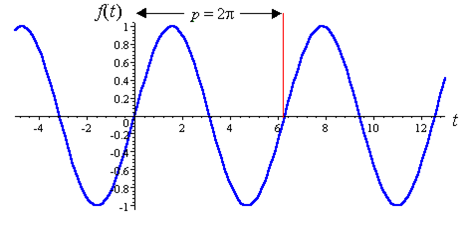

Una función se dice que es periódica con período T si, para algún valor constante no nulo T, tenemos: f(x + T) = f(x) para todos los valores de x. Si existe al menos una constante positiva con esta propiedad, se le llama período. Una función con período T se repite en intervalos de longitud T, a estos intervalos también se les conoce como períodos.
Ejemplo: f(x) = sen x, es periódica y su período es T = 2π
sen (x + 2π) = sen x
